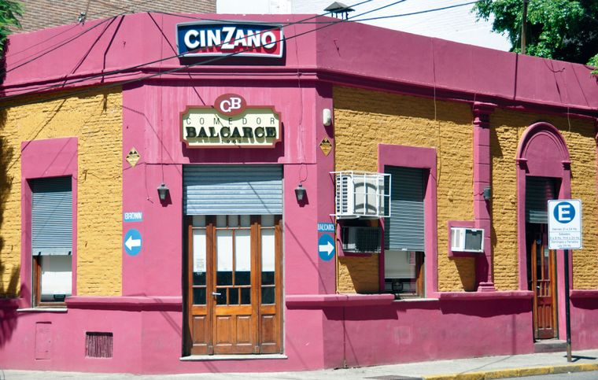

Nuestra Historia
Ubicado en el corazón de Rosario, "Comedor Balcarce" nació en el año 1987 como un pequeño emprendimiento familiar. Con el paso de los años, se convirtió en un lugar icónico de la ciudad, conocido por sus recetas tradicionales, el ambiente hogareño y la calidez de su gente.
Desde entonces, mantenemos vivas las costumbres gastronómicas argentinas, preparando cada plato con dedicación y amor como si fuera para nuestra propia familia. Esta página reúne nuestras recetas más queridas: una entrada irresistible, un plato principal abundante y un postre reconfortante.
